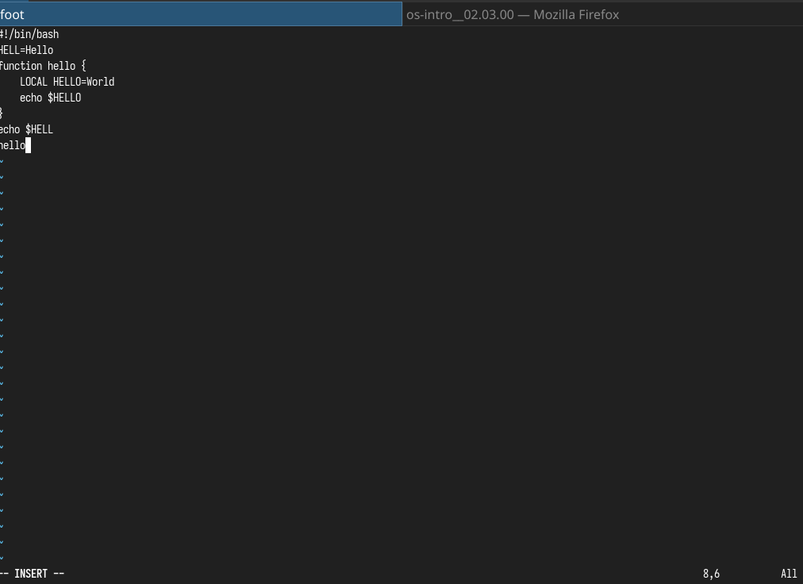
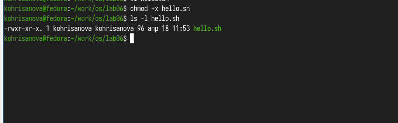
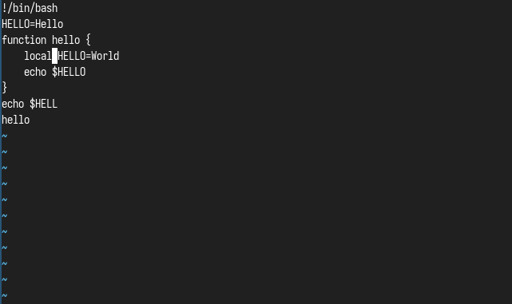
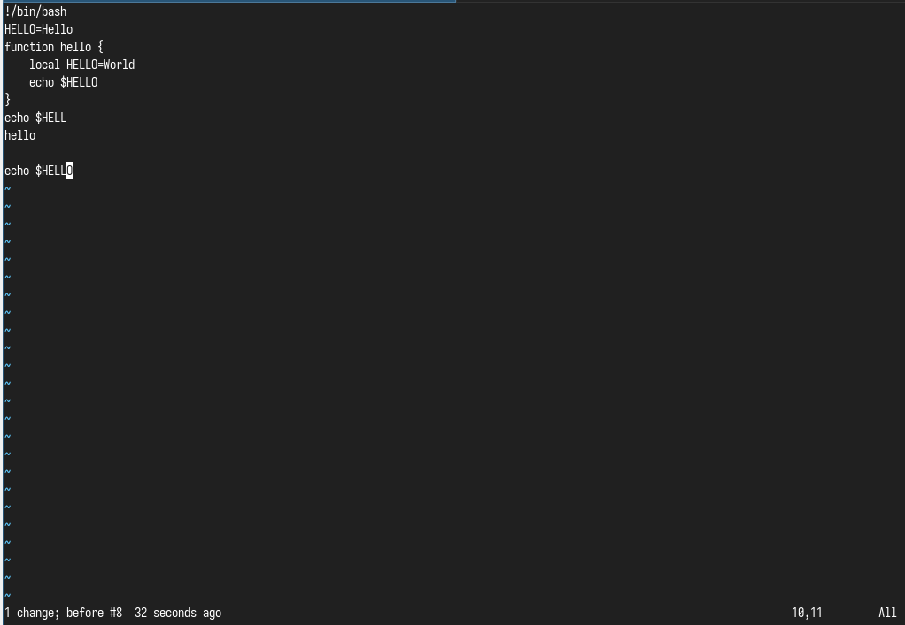
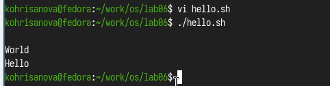

Познакомиться с операционной системой Linux. Получить практические
навыки рабо- ты с редактором vi, установленным по умолчанию практически
во всех дистрибутивах.
Задание
Создайте каталог с именем ~/work/os/lab06.
Перейдите во вновь созданный каталог.
Вызовите vi и создайте файл hello.sh
Нажмите клавишу i и вводите следующий текст.
Нажмите клавишу Esc для перехода в командный режим после завершения
ввода текста.
Нажмите : для перехода в режим последней строки и внизу вашего
экрана появится приглашение в виде двоеточия.
Нажмите w (записать) и q (выйти), а затем нажмите клавишу Enter для
сохранения вашего текста и завершения работы.
Вызовите vi на редактирование файла 1 vi
~/work/os/lab06/hello.sh
Установите курсор в конец слова HELL второй строки.
Перейдите в режим вставки и замените на HELLO. Нажмите Esc для
возврата в команд- ный режим.
Установите курсор на четвертую строку и сотрите слово LOCAL.
Перейдите в режим вставки и наберите следующий текст: local, нажмите
Esc для возврата в командный режим.
Установите курсор на последней строке файла. Вставьте после неё
строку, содержащую следующий текст: echo $HELLO.
Нажмите Esc для перехода в командный режим.
Удалите последнюю строку.
Введите команду отмены изменений u для отмены последней
команды.
Введите символ : для перехода в режим последней строки. Запишите
произведённые изменения и выйдите из vi.
Выполнение лабораторной
работы
Пишу код из
листинга в редакторе. (рис. @fig:001)

Написание кода
Делаю файл исполняемым (рис.
@fig:002)

Делаю файл исполняемым
Редактирую
через vim горячими клавишами программу. (рис. @fig:003)

Редактирование кода
Редактирую
через vim горячими клавишами программу. (рис. @fig:004)

Редактирование кода
Запускаю написанную
программму. (рис. @fig:005)

Запуск программы
Выводы
Мы Познакомились с операционной системой Linux. Получили практические
навыки работы с редактором vi, установленным по умолчанию практически во
всех дистрибутивах.